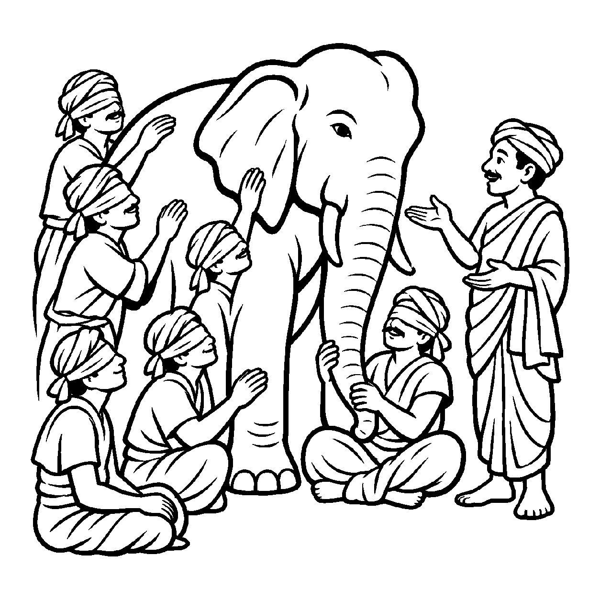

ઝવેરીના ટેબલ પર મૂકેલા કંકણને જોઈને એક વિદ્વાન તત્વચિંતક પ્રશ્ન કરે છે: "આ ઘરેણાનું સમગ્ર વાસ્તવિક સત્ય એકસાથે શું છે?" ઝવેરી સ્મિત સાથે કહે છે: "પહેલાં આ કંકણ પોતાના સુવર્ણરૂપ સ્વચતુષ્ટયથી 'છે' (અસ્તિ). બીજી ક્ષણે આ કંકણ લોખંડ કે માટીરૂપ પરચતુષ્ટયથી 'નથી' (નાસ્તિ). અને ત્રીજી ક્ષણે જ્યારે આ બંને ભાવોને એક જ સમયે એકસાથે વાણીમાં ઉતારવા જઈએ, ત્યારે કોઈ એક શબ્દ ન હોવાથી તે 'અવક્તવ્ય' છે!" અહીં ત્રણેય મૂળભૂત દ્રષ્ટિકોણોનો એક સુંદર સુમેળ રચાય છે. તેવી જ રીતે જ્યારે ચેતન આત્માને ક્રમશઃ — પોતાના જ્ઞાન-દર્શનરૂપ સ્વચતુષ્ટયથી અસ્તિત્વવાન, પરદ્રવ્યરૂપ પરચતુષ્ટયથી નાસ્તિત્વવાન અને યુગપત્ બંને અપેક્ષાઓ એકસાથે ન કહી શકાતી હોવાથી અવક્તવ્ય જાણીને — "સ્યાત્ આત્મા અસ્તિ છે, નાસ્તિ છે અને અવક્તવ્ય છે" — એમ સપ્તભંગીના અંતિમ સાતમા ભંગને મુખ્યતાથી ગ્રહણ કરતો જે નય છે, તેને 'અસ્તિત્વ-નાસ્તિત્વ-અવક્તવ્યનય' કહેવાય છે.
આ નય સપ્તભંગીનો મુગટમણિ છે. તે પૂર્વેના તમામ ભંગોના તારણોને પોતાનામાં સમાવી લે છે. આત્મા શૂન્ય નથી કારણ કે સ્વરૂપે અસ્તિ છે; આત્મા સર્વરૂપ ભ્રમિત નથી કારણ કે પરરૂપે નાસ્તિ છે; અને આત્મા શબ્દોની સાંકળમાં કેદ નથી કારણ કે તે યુગપત્ અવક્તવ્ય છે. આ ત્રણ સ્તંભો પર જૈન દર્શનનો અદ્ભુત સ્યાદ્વાદ મહેલ અડગ ઊભો છે. આ નય સાધકને સર્વ પક્ષપાતો અને એકાંત હઠાગ્રહોથી મુક્ત કરીને પરમ સમતામાં સ્થિર કરે છે.
આ નય સાધકને સમજાવે છે કે જ્યારે આ ત્રણેય પાસાં સ્પષ્ટ થઈ જાય છે, ત્યારે મનમાંથી તર્કના તમામ તરંગો શમી જાય છે અને સાધક મહામૌનમાં અંતર્લીન થઈ જાય છે.
સ્વરૂપે અસ્તિ પરે નાસ્તિ, યુગપત્ કથને મૌન;
સાતમો ભંગ સપ્તભંગીનો, પામે જ્ઞાની કૌન.
અસ્તિત્વ નાસ્તિત્વ વળી, અવક્તવ્ય એકાકાર;
પૂર્ણ સત્ય પરખાય ત્યાં, શમે સહુ સંસાર.
સાધકને સમજાવે છે કે જ્યારે આ ત્રણેય પાસાં સ્પષ્ટ થઈ જાય છે, ત્યારે મનમાંથી તર્કના તમામ તરંગો શમી જાય છે અને સાધક મહામૌનમાં અંતર્લીન થઈ જાય છે.

ધર્મપુરી નગરમાં સાત અંધજનો એક મોટા હાથીને સ્પર્શીને અંદરોઅંદર ભયાનક ઝઘડો કરતા હતા. કોઈ કહેતું હતું કે "હાથી થાંભલા જેવો છે", કોઈ કહેતું કે "હાથી સૂપડા જેવો છે", કોઈ કહેતું કે "હાથી દોરડા જેવો છે." પ્રત્યેક વ્યક્તિ પોતાના એકાંત પક્ષને જ સર્વસ્વ માનતી હતી અને બીજાને જૂઠો કહીને લાકડીઓ ઉગામતી હતી. નગરમાં ભારે હોબાળો મચી ગયો હતો. કોઈ સમાધાન દેખાતું નહોતું.
તે સમયે ત્યાં આંખોવાળા એક પરમ વિવેકી સંત પધાર્યા. તેમણે સાતેય અંધજનોને શાંત પાડીને કહ્યું: "ભાઈઓ! લડશો નહીં, અસ્તિત્વ-નાસ્તિત્વ-અવક્તવ્યનયને ઓળખો! તમારામાંથી કોઈ સાવ ખોટું નથી અને કોઈ પૂર્ણ સાચું પણ નથી! જે પગને સ્પર્શે છે તેના માટે હાથી થાંભલા જેવો 'છે' (અસ્તિ), પણ તે સૂપડા જેવો 'નથી' (નાસ્તિ); અને સમગ્ર હાથીને એકસાથે કેવળ પગ કે કાનના એક શબ્દમાં કહેવો 'અશક્ય' છે (અવક્તવ્ય)! જ્યારે તમે ત્રણેય પાસાં સમજી લેશો કે હાથી પગરૂપે છે, કાનરૂપે નથી અને સમગ્રપણે અવક્તવ્ય છે, ત્યારે જ હાથીનું સાચું સ્વરૂપ સમજાશે!" સંતની આ યુક્તિસંગત વાણી સાંભળીને અંધજનોની લાકડીઓ નીચે પડી ગઈ. અહંકાર અને વિવાદ ક્ષણવારમાં ઓગળી ગયા. સત્યની અખંડ પૂર્ણતાનો બોધ થતાં જ સૌનું ચિત્ત પરમ વિશ્રામમાં શાંત થઈ ગયું.
જો જીવ આ ત્રિપરિમાણીય સત્યમાંથી કોઈપણ એક અંશને પકડીને બેસી જાય, તો તે અંધજનની જેમ અધૂરા સત્યમાં જ લડતો રહે છે. શબ્દો કે વ્યાકરણના બાહ્ય નિયમોમાં જ અટવાઈ રહેવાથી અંતરંગ ભાવશુદ્ધિ ખોવાઈ જાય છે અને જીવ શુષ્ક વાદવિવાદ કે જડ ક્રિયાજડતામાં સબડતો રહે છે.
આ નય તમામ નયોનો સમન્વય કરીને સાધકને પરમ વીતરાગભાવમાં પ્રતિષ્ઠિત કરે છે, જેથી જીવ હું-પણાને ખોઈને પોતાના આત્મસ્વરૂપમાં સ્થિર થાય છે. તે વાણી અને સંજ્ઞાઓને આત્મજ્ઞાનનું સાધન બનાવી સાધકને નિર્વિકલ્પ અનુભૂતિ તરફ દોરી જાય છે, જેથી ચેતના પોતાના આત્મસ્વરૂપમાં સ્થિર થઈ શાંતિ અનુભવે છે.